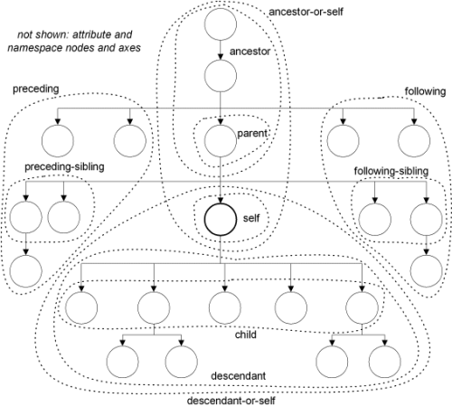
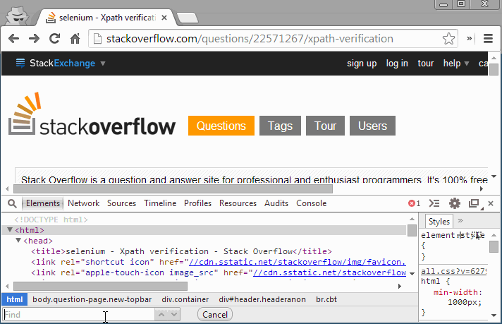

Web и DHTML
XML
Леонид Волканин
ИМКН УрФУ

В современной веб-разработке XML как формат обмена и хранения уступает формату JSON
Тем не менее, в промышленных информационных системах XML — стандарт de facto
XML (eXtensible Markup Language), расширяемый язык разметки, предназначен для хранения структурированных данных
XML может содержать любые теги, описанные создателями словаря, но XML не даёт указаний, как должны отображаться данные
<?xml version="1.0" encoding="utf-8" ?><math xmlns="http://www.w3.org/1998/Math/MathML"><apply><approx/><pi/> <!-- greek small letter pi --><cn type="rational">22<sep/>7</cn></apply></math>
В браузере это будет выглядеть так:
К сожалению, только Presentation Markup
Текст анализируется XML-процессором
Он ничего не знает о семантике, производит синтаксический разбор (parsing) и проверяет правильность документа (well-formed)
Если всё хорошо, то результаты разбора передаются прикладной программе для содержательной обработки
Если же документ оформлен неверно, то XML-процессор должен сообщить о них пользователю
Набор директив (Processing instructions), «стандартные»
<?xml version="1.0" encoding="utf-8" ?><?xml-stylesheet type="text/xsl" href="template.xsl"?>
или для конкретного процессора, напр. DocBook
<?dbhh topicname="name" topicid="id"?>
Тег — элемент языка разметки, заключённый между < и >
<author>Сергей Довлатов</author><author />Регистр важен: <author> и <Author> — разные теги
<title>...</title> <author>...</author> — Правильно<author>...<name></author>...</name> — Неправильно
<div title="he's alive"> — в двойных кавычках<div title='size is 10" more'> — в апострофах
Без кавычек, как в HTML, писать нельзя — <price unit=RUB>
<!-- Комментарий -->
" " " двойная кавычка' ' ' апостроф& & & амперсанд< < < меньше> > > больше
В DTD можно определить свои:
<!DOCTYPE root [<!ENTITY nbsp " ">]>
Так нехорошо — тег данных воспринимается как часть xml:
<layout><h1>Заголовок</h1></layout>
CDATA — символьные данные
<layout><![CDATA[<h1>Заголовок</h1>]]</layout>
Проверяется соответствие XML schema (XSD, RELAX NG или даже DTD)
Например, XML может «прилететь» с сервера
var xhttp = new XMLHttpRequest();xhttp.open("GET", "catalog.xml", false); // syncxhttp.send();var xmlDoc = xml.responseXML;var musiclist = xmlDoc.getElementsByTagName("track");
Или использоваться как источник данных (xml datasource)
<aaa><bbb><ccc/></bbb><BBB><CCC/></BBB><x111><x222/></x111></aaa>
Человек легко распознаёт, к какому из 3 наборов отнести элемент
XML-процессору надо объяснить — объявить пространства имён
Для объявления пространств имён (XML namespace) используются зарезервированные атрибуты, начинающиеся с xmlns
<lower:aaa xmlns:lower="http://urfu.ru/lowercase"><lower:bbb xmlns:lower="http://urfu.ru/lowercase"><lower:ccc xmlns:lower="http://urfu.ru/lowercase"/></lower:bbb><upper:BBB xmlns:upper="http://urfu.ru/uppercase"><upper:CCC xmlns:upper="http://urfu.ru/uppercase"/></upper:BBB><xnumber:x111 xmlns:xnumber="http://urfu.ru/xnumber"><xnumber:x222 xmlns:xnumber="http://urfu.ru/xnumber"/></xnumber:x111></lower:aaa>
<lower:aaa xmlns:lower="http://urfu.ru/lowercase"><lower:bbb><lower:ccc/></lower:bbb><upper:BBB xmlns:upper="http://urfu.ru/uppercase"><upper:CCC/></upper:BBB><xnumber:x111 xmlns:xnumber="http://urfu.ru/xnumber"><xnumber:x222/></xnumber:x111></lower:aaa>
<html xmlns="http://www.w3.org/1999/xhtml"xmlns:svg="http://www.w3.org/2000/svg">...<body><svg:svg width="300px" height="200px"><svg:circle cx="150" cy="100" r="50" fill="#ff0000"/></svg:svg>
В HTML5 языки SVG, MathML уже включены, браузеру svg: не нужен
Пространства имен определяются значением xmlns, а не префиксом
<lower:aaa xmlns:lower="http://urfu.ru/lowercase"xmlns:upper="http://urfu.ru/lowercase"><lower:bbb></lower:bbb><upper:BBB>
В этом примере пространство имён одно, хотя префиксы разные
Часто по «ссылке» лежит описание конкретного диалекта XML
createElementNS("http://www.w3.org/2000/svg", "rect")
У созданного элемента будут заполнены свойства .namespaceURI, .prefix
Если и другие «парные вызовы» — getElementsByTagNameNS, ...
var xhttp = new XMLHttpRequest();xhttp.open("GET", "catalog.xml", false); // syncxhttp.send();var xmlDoc = xml.responseXML;var titles = xmlDoc.evaluate("//book[price>35]/title");
В XML-документах — узел.selectNodes("XPath-выражение")
XPath использует адресные выражения для идентификации узлов в XML-документе
Эти адресные выражения очень похожи на пути в файловой системе
/home/volkanin/wwwroot
bookstore/book/title
Наиболее часто используются
имя — выбирает все элементы с заданным именем/ — выбирает, начиная с корня// — выбирает узлы в документе незавимо от иерархии. — выбирает текущий узел.. — выбирает родителя текущего узла@ — выбирает атрибуты
С помощью осей можно сказать, в какой стороне искать
self — сам узелchild — Дочерние узлыparent — Родительский узелdescendant — Потомки узлаdescendant-or-self — Узел и его потомкиancestor — Предки узлаancestor-or-self — Сам узел и его предкиfollowing — Все узлы после данногоfollowing-sibling — Все узлы этого же уровня после данногоpreceding — Все узлы перед даннымpreceding-sibling — Все узлы этого же уровня перед даннымattribute — Узлы аттрибутовnamespace — Узлы пространства имен
/bookstore/book[1]/bookstore/book[last()]/bookstore/book[last()-1]/bookstore/book[position()<3]//title[@lang]//title[@lang='en']/bookstore/book[price>35.00]/bookstore/book[price>35.00]/title
+, -, *, div, mod
=, !=, <, <=, >, >=
or, and
| — операция над набором узлов (//book | //cd)
больше тут — w3.org/TR/xpath-functions-30
Числовые: number, abs, round, ceiling, floor, exp ...
Аггрегатные: count, sum, avg, min, max
Строковые: string, string-length, substring, contains, starts-with, concat, normalize-space, translate ...
Регулярные выражения: matches, replace, tokenize ...
Булевые: boolean, false, true, not
Дата/время: year-from-date, ... seconds-from-date
Chrome и Firefox (с Firebug и Firepath):

Предназначен для трансформации исходного документа, например готовый векторный SVG из извлечённых из СУБД данных
<root><item><detail>100</detail> <detail>200</detail></item><item><detail>50</detail> <detail>100</detail></item></root>
Более простой пример
<source><title>XSL</title><author>John Smith</author></source>
Можно автоматически преобразовать в
<h1>XSL</h1><h2>John Smith</h2>
<xsl:stylesheet version='1.0'xmlns:xsl='http://www.w3.org/1999/XSL/Transform'><xsl:template match="/"><h1> <xsl:value-of select="//title"/> </h1><h2> <xsl:value-of select="//author"/> </h2></xsl:template></xsl:stylesheet>
Добавить к XML-документу директиву <?xml-stylesheet type="text/xsl" href="template.xsl"?>
Или программно:
// source и stylesheet — объекты XML DOMDocumentsource.load("books.xml");stylesheet.load("template.xsl");result = source.transformNode(stylesheet);
Каждое преобразование XSL должно начинаться с элемента <xsl:stylesheet version = '1.0' xmlns:xsl='http://www.w3.org/1999/XSL/Transform'>
XSLT-процессоры анализируют исходный XML и пытаются найти подходящий XSL-шаблон: <xsl:template match="узел"> ... </xsl:template>
Если такой шаблон найден, то выполняются инструкции внутри него
Обработка всегда начинается с шаблона, где match="/"
Если такого нет, используется неявный шаблон: обрабатывать все дочерние элементы текущего узла, включая текстовые узлы
Содержание элементов извлекается из исходного документа:
<xsl:value-of select="xpath" /><xsl:apply-templates select="xpath" />Иногда применяют термины «data-driven» и «template-driven» трансформации